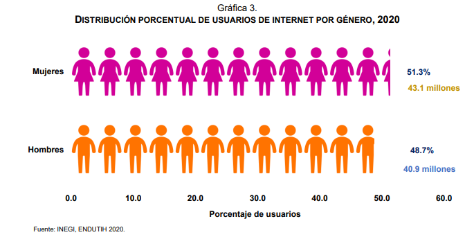
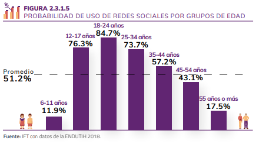
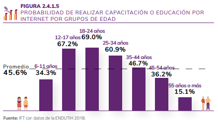
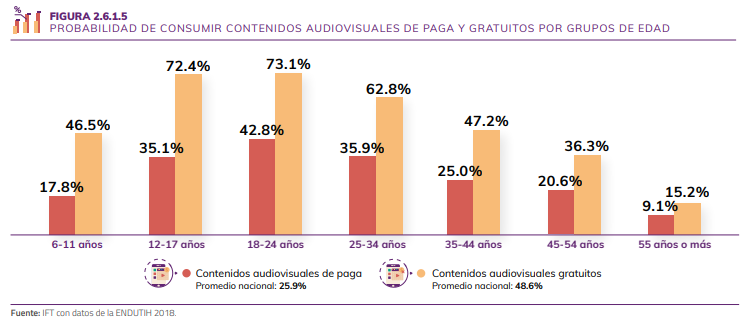
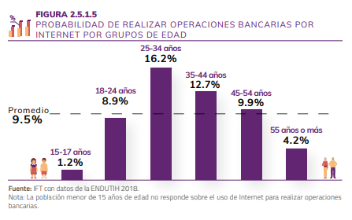

How we use the Internet in Mexico?, a statistical perspective
Menu
Gender of the users.
Users' activities.
Internet access points.
Change language/Cambiar idioma
Gender of the users.
In Mexico there are 80.6 million Internet users, which represent 70.1% of the population aged six or over. This figure reveals an increase of 4.3 percentage points with respect to that registered in 2018 (65.8%) and of 12.7 percentage points with respect to 2015 (57.4 percent).
An estimated 20.1 million households have Internet access (56.4%), either through a fixed or mobile connection, which means an increase of 3.5 percentage points compared to 2018 and 17, 2 percentage points compared to the results of 2015 (39.2 percent).
Of the 80.6 million Internet users aged six and over, 51.6% are women and 48.4% are men.
Between 2017 and 2019, users in the urban area went from 71.2% to 76.6%, while in the rural area the increase was from 39.2% to 47.7% of users aged 6 or over .
The three main means for connecting users to the Internet in 2019 were: smart cell phone (Smartphone) with 95.3%; laptop with 33.2%, and desktop with 28.9 percent.

Users' activities.
With respect to the Internet activities analyzed in the study, the results show that at the national level, the ones that people 6 years of age or older carry out the most are using social networks with 51%, consuming free audiovisual content with 49% and carrying out activities training or education (courses, tutorials, etc.) with 46%. However, the use of social networks is the activity with the greatest gap between urban and rural areas, since while in urban areas 57 out of 100 people use social networks, in rural areas only 30 out of 100 do so. .
On the other hand, the activities least carried out on the Internet are banking and selling online, since only 10% and 6% of the population carry them out, respectively. It stands out that in rural areas only 2 out of 100 people carry out these activities, while in urban areas 12 out of 100 people carry out banking operations and 8 out of 100 sell online.


Internet access points.
This 2022, during her Fourth Government Report, the Head of Government of Mexico City, Claudia Sheinbaum Pardo, highlighted that "Internet access is a right, not a privilege" and said that for three years the expansion and modernization of the C5 and, today, 63 thousand 191 cameras are reached and it is expected to close the year 2 thousand 800 more.
Regarding free internet access points, he pointed out that Mexico City now has 33,000, "we are now the most connected city in the world," he celebrated.
As of July 2022, the city already had free internet in 1,182 primary and secondary schools, in 23 campuses of the Higher Secondary Education Institute (IEMS), seven university campuses, 50 Metrobús stations, 177 Housing Units, and 84 neighborhoods. the periphery.
Check out the free internet access points in Mexico City here.